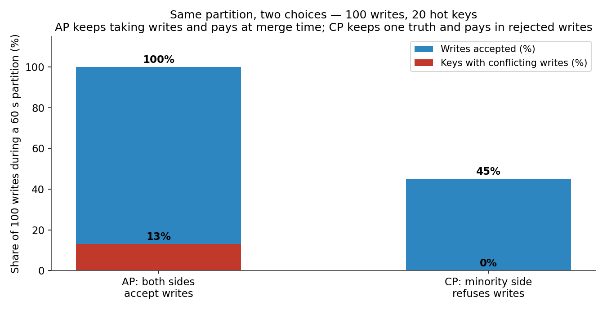
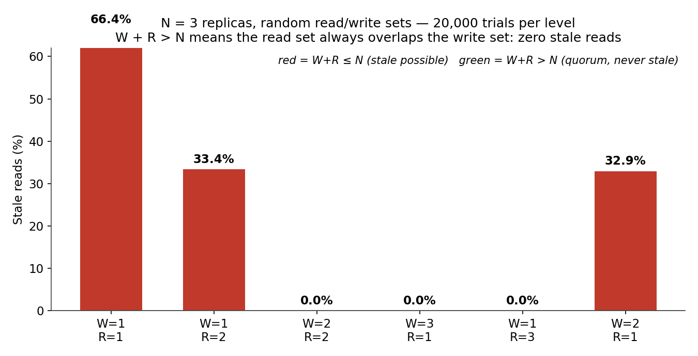
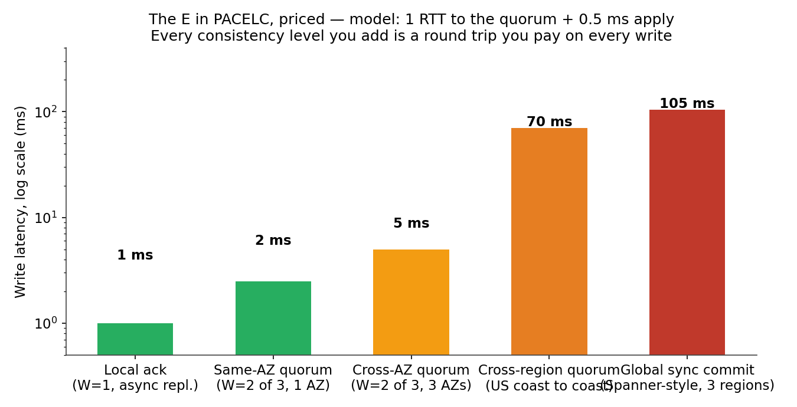
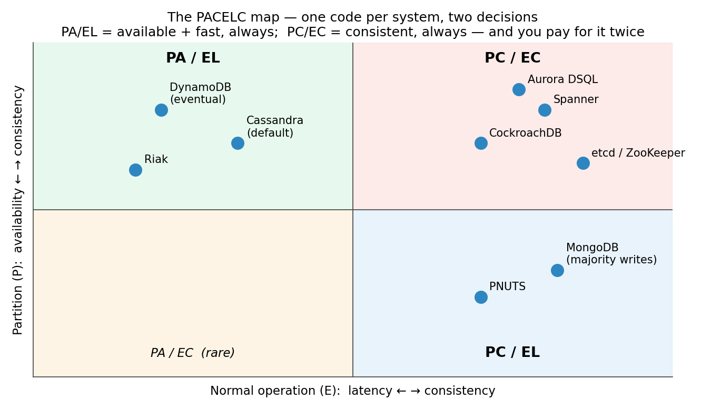

Every system-design interview asks about CAP, and almost every answer is wrong. The candidate draws the triangle — Consistency, Availability, Partition Tolerance, pick two — and the interviewer nods, and both of them walk away having agreed on a statement that is, at best, a third of the truth. The triangle is not wrong the way a wrong number is wrong. It is wrong the way a map of a city with only the highways is wrong: it shows the rare disaster and hides the road you drive every day.
Here is the correction in one sentence: CAP only describes what your system does when the network is broken. PACELC describes what it does the other 99.9% of the time — and that is the tradeoff you actually live with. A partition is the crisis. Latency versus consistency is the rent. This post is about both, with the numbers: quorum math that makes stale reads exactly zero, a partition simulation that shows what availability really costs, and the latency ladder that prices every consistency level you could buy.
This is Part 5 of System Design, Plainly: one concept per post, evergreen, beginner-friendly, with the concrete numbers and the failure modes. Today: CAP and PACELC — what the theorem actually says, why "pick two of three" misleads you, and how to choose per operation instead of per system.
The ELI5 version
Imagine a bank with two branches and one account. You deposit $100 at branch A. Your friend walks into branch B five minutes later and asks for the balance. What should branch B say?
If the phone line between the branches is working, branch B calls branch A, confirms the $100, and answers correctly. That call costs time — the friend waits. If the phone line is cut — that is a network partition — branch B has two options, and there is no third one. It can refuse to answer ("I can't verify your balance right now, come back later") — that is choosing consistency over availability. Or it can answer from its own books ("your balance is $0, as far as I know") — that is choosing availability over consistency. It cannot do both, because the information it needs is on the other side of a cut wire.
Now the part the triangle hides: even when the phone line works fine, branch B still has a choice. It can call branch A on every balance question — always correct, always slow — or it can answer from its own books immediately and sync up with branch A later — always fast, sometimes stale. That everyday choice, made on a healthy network, is what PACELC adds. CAP is the crisis decision. PACELC is the daily one. And the daily one is the one your users feel on every single request.
How it works: CAP, precisely
The CAP theorem was Eric Brewer's conjecture in a 2000 keynote, proved by Seth Gilbert and Nancy Lynch in 2002. It says a distributed data store cannot guarantee all three of these at once during a network partition:
- Consistency (C) — every read receives the most recent write, or an error. In CAP's sense this means linearizability: all nodes agree on one version of the truth, as if there were a single copy. This is not the "C" in ACID, which is about invariants inside one transaction.
- Availability (A) — every request to a non-failing node gets a non-error response. Note what it does not promise: the response may be stale. Availability is about answering, not about being right.
- Partition tolerance (P) — the system keeps operating when messages between nodes are dropped or delayed. A partition is not only a severed cable: a switch failure, a misconfigured firewall, a garbage-collection pause long enough to look like a dead node — all of these are partitions from the system's point of view.
The first correction: P is not a choice. Networks partition. Fiber gets cut, routers reboot, availability zones lose connectivity. Any system that runs on more than one machine must tolerate partitions, so the real CAP decision is always CP versus AP — what do you do while the partition lasts?
- CP — refuse requests on the minority side rather than risk a wrong answer. A payment ledger, a seat reservation, a distributed lock: the system would rather say "no" than say something false. Our simulation: during a 60-second partition, the minority side rejects 55% of writes — every write that happened to land on the wrong side of the cut. Zero divergence, zero conflicts, but more than half the writes fail in front of the user.
- AP — keep accepting writes on both sides and reconcile when the partition heals. A shopping cart, a like counter, a social feed: the system would rather take the write than lose it. Our simulation on the same 100 writes: both sides accept everything, but 13 of the 20 hot keys were written on both sides — 65% of keys now have two conflicting versions, and something has to decide which one wins.

Notice what decides the cost: not the number of writes, but the number of keys. The same 100 writes spread across 1,000 keys produce exactly 1 conflict (0.1%). The AP tax is a hot-key tax. A cart service with millions of distinct carts pays almost nothing for availability; a seat map with 20 contested seats pays for it on nearly every write. That is the first hint that the right answer is per operation, not per system — and it is the thread the rest of this post pulls.
Quorum math: the dial between stale and slow
Replication gives you a dial, and the dial is arithmetic. With N replicas, a write waits for W acknowledgements and a read waits for R responses. If W + R > N, the read set and the write set must overlap on at least one replica that has the latest write — so a read can never miss it. If W + R ≤ N, the sets can miss each other entirely, and the read can be stale.
Our Monte Carlo simulation (N = 3, random read/write sets, 20,000 trials per level) makes the cliff exact:
- W=1, R=1 (write to one replica, read from one): 66.4% of reads are stale. This is the default for a system that acks locally and reads locally — fast, and wrong two times out of three.
- W=1, R=2 or W=2, R=1: 33% stale. Reading from two replicas halves the miss rate, but a third of reads still see the old value.
- W=2, R=2, W=3, R=1, W=1, R=3: 0.0% stale in all 20,000 trials. The moment W + R exceeds N, staleness drops off a cliff to exactly zero — not "rare", zero, because overlap is a mathematical guarantee, not a probability.

This is why Cassandra lets you set the consistency level per query: ONE for the like counter, QUORUM for the balance, ALL for the once-a-year reconciliation job. DynamoDB does the same with its strongly-consistent-read flag — eventual by default, strong when you ask and pay for it. Our simulation of that toggle: against a replica lagging on 5% of reads, eventual reads come back stale 5.0% of the time; strong reads, 0.0%. The price of strong is one quorum round trip per read. Which brings us to the bill.
PACELC: the tradeoff you pay every day
Daniel Abadi proposed PACELC in a 2010 blog post and formalized it in a 2012 paper, and its whole point is that CAP stops talking exactly where your system spends its life. The statement, in full:
If there is a Partition, choose Availability or Consistency. Else — normal operation, no partition — choose Latency or Consistency.
Read it as two decisions instead of one. The first half is CAP. The second half is new, and it is the one that shows up in your latency dashboard: to guarantee consistency even on a healthy network, replicas must coordinate before answering, and coordination is round trips. A write that acks locally costs about 1 ms. A write that waits for a same-AZ quorum costs about 2.5 ms. Cross-AZ, about 5 ms. A write that waits for a quorum across the continental US costs about 70 ms — 14× the same-AZ quorum — and a globally synchronous commit across three regions costs about 105 ms, 105× a local ack. Every consistency level you buy is a round trip you pay on every single write, healthy network or not.

That ladder is why the PA/EL systems and the PC/EC systems look so different in production, and why the classification below is more useful than any CAP label. A system's PACELC code is two letters for the partition branch and two for the normal branch:
- PA/EL — DynamoDB (eventual mode), Cassandra (default), Riak. Available during a partition, fast normally. The cost is eventual consistency: reads can lag, and conflicts get resolved after the fact.
- PC/EC — Spanner, CockroachDB, etcd, ZooKeeper, MongoDB (majority writes). Consistent during a partition, consistent normally — and slow in both branches, because every write waits for a quorum or a global commit. Spanner buys its global consistency with TrueTime, synchronized atomic clocks and GPS receivers, and still pays a commit wait measured in single-digit milliseconds per write (Google-reported); that is the tax for a ledger that is correct on every continent at once.
- PC/EL — MongoDB (default reads from primary), Yahoo's PNUTS. Consistent when partitioned, but reads normally go to the local primary without waiting — the odd quadrant, and the proof that the two branches really are independent decisions.

The state of the art: tunable, per operation, and cheaper than it used to be
The 2026 picture is not "pick a quadrant and live in it." It is tunable consistency, set per operation, on systems that keep shrinking the latency tax:
1. Tunable reads and writes are the default now. DynamoDB offers strongly consistent reads as a per-request flag and replicates global tables typically in under a second (AWS-reported). Cassandra's per-query consistency levels — ONE, QUORUM, ALL, LOCAL_QUORUM — are the textbook example. The decision moved from the architecture document into the query: the same cluster serves the like counter at ONE and the balance at QUORUM, and the latency budget follows the operation, not the system.
2. PC/EC got cheaper. The old story was that global strong consistency costs a cross-region round trip on every write, full stop. Aurora DSQL (generally available December 2024) attacks exactly that: a disaggregated, multi-region PostgreSQL-compatible database that promises strong consistency with single-digit-millisecond reads, by separating the log from the compute and committing through a distributed transaction log instead of two-phase commit across regions (AWS-reported — independent benchmarks are still thin, treat the headline as a vendor claim). CockroachDB's 25.x releases keep pushing the same direction with follower reads: reads from the nearest replica for stale-tolerant queries, quorum reads only where freshness matters. The PC/EC quadrant is no longer a 100-ms sentence.
3. The consistency models got names, and the names matter. Linearizability (CAP's C) is the strongest: every operation looks instantaneous. Below it sit sequential consistency, causal consistency (your reply is never visible before the message it replies to), read-your-writes, monotonic reads, and eventual consistency. Most real systems sell you one of the middle rungs per operation: DynamoDB's read-your-writes on the same session, Spanner's external consistency, CockroachDB's serializable by default with follower reads as the escape hatch. In an interview, naming the rung you need — not just "strong" or "eventual" — is what separates a good answer from a recited one.
4. The edge cases moved to the center. The systems that win in 2026 are the ones that handle the cases CAP pretends do not exist: partial partitions (one node slow, not dead — a GC pause looks exactly like a partition to a timeout), clock skew (Spanner's TrueTime exists because wall clocks lie by milliseconds, and a commit that trusts a lying clock can order two writes backwards), and the read path (most systems are write-consistent and read-eventual by default, and the stale read is the bug users actually report).
Why it breaks
Every CAP/PACELC failure is one of these six:
- The "CA system" that is really one node. A single-node database is consistent and available — and has no partition to tolerate, because there is nothing to partition. The moment you add a second node for failover, the triangle applies, and the marketing label does not survive the first network blip. Martin Kleppmann's 2015 critique, "Please stop calling databases CP or AP", is still the sharpest version of this: the labels describe one behavior under one failure, not the system.
- Availability is not binary. CAP's A means "every non-failing node answers every request." Real systems degrade: a CP system that refuses writes on the minority side is still serving reads; an AP system that accepts writes is still dropping the ones that conflict. The useful question is never "is it available" but "what fraction of which operations still succeed, and what do the failures look like to the user?"
- The stale read nobody tested. The write path is quorum-consistent, the read path is eventual by default, and the first user to refresh after an update sees the old value. This is the most common consistency bug in production, and it is a configuration bug, not a theorem: the read consistency level was never set, because nobody owned the read path.
- The slow node that looks dead. A 30-second GC pause is indistinguishable from a partition to a 5-second timeout. The system declares the node dead, re-elects a leader, and the "dead" node comes back and tries to lead again — a flapping partition that no theorem covers, because CAP assumes partitions are clean cuts. Fix: failure detectors with suspicion levels, not binary timeouts, and fencing tokens so a resurrected leader cannot write.
- The clock that lies. Two writes ordered by wall-clock time on two machines whose clocks differ by 40 ms can be applied in the wrong order — and no quorum fixes it, because both writes reached a quorum. Spanner pays for atomic clocks for exactly this reason; everyone else pays with logical clocks (Lamport timestamps, hybrid logical clocks) or accepts the risk. If your ordering depends on
time.now(), you have a consistency bug with a timer on it. - The conflict resolution nobody designed. The AP system accepts writes on both sides of a partition, the partition heals, and 65% of the hot keys have two versions — and the resolution rule is "last write wins by timestamp", which silently discards one side's writes. Last-write-wins is a conflict deletion policy, not a resolution policy. CRDTs (for counters, sets, registers that merge by construction) or application-level merges (the shopping cart union both sides) are the honest answers; "last write wins" is the one you reach for when nobody thought about it.
The interview angle
"Design a payment system" and "design a like counter" are the same question with opposite answers, and the interviewer is checking whether you notice. The expected tour: define the operation's cost of a wrong answer first (a double charge is a lawsuit; a stale like count is invisible), then choose per operation — CP/EC for the charge and the seat reservation, AP/EL for the cart, the feed, and the counter — then name the mechanism (quorum levels, W + R > N, TrueTime or Raft for the consistent side, CRDTs or last-write-wins with eyes open for the available side).
The follow-ups that separate good answers from great ones: what consistency does a read need? (read-your-writes for the user who just posted, eventual for everyone else); how do you make a stale read impossible without paying the quorum on every read? (session stickiness plus read-your-writes, or a version token the client carries); what happens when a node is slow, not dead? (suspicion-based failure detection, fencing); when is strong consistency free? (single-region, same-AZ quorum — 2.5 ms — is the cheapest consistency you will ever buy, and the reason most systems are strongly consistent inside one region and eventual across regions); and what does your system do when the partition heals? (the merge policy is the design; the partition is just the trigger).
In the real world, the decision is usually not which database to buy — it is which consistency level each operation gets. The same cluster serves both answers. The theorem tells you the tradeoff exists; the per-operation choice is the engineering.
Takeaways
- CAP only covers the crisis: during a partition you choose consistency or availability, and P is not optional — the real choice is always CP vs AP.
- PACELC covers the other 99.9%: even on a healthy network, replication forces latency versus consistency — a global synchronous commit costs 105× a local ack, and you pay it on every write.
- Quorum math is a cliff, not a slope: with N = 3, W=1/R=1 leaves 66.4% of reads stale and W=1/R=2 leaves 33.4%, but every level with W + R > N reads exactly 0% stale in 20,000 trials.
- The AP tax is a hot-key tax: 100 writes during a partition conflict on 65% of 20 hot keys but only 0.1% of 1,000 keys — while CP rejects 55% of writes and keeps a single truth.
- Classify by PACELC, not CAP: DynamoDB and Cassandra are PA/EL, Spanner and CockroachDB are PC/EC, MongoDB's majority writes are PC/EC — and the code is set per operation, not per system.
- The most common consistency bug is the read path: a quorum-consistent write path with an eventual read path shows users the old value, because nobody set the read consistency level.
- Try it yourself. The companion notebook replays all four simulations: the quorum cliff (66.4% → 0.0% stale), the partition divergence (65% → 0.1% conflicts as the keyspace widens), the latency ladder (1 ms → 105 ms), and the tunable-consistency toggle (5.0% stale eventual vs 0.0% strong).
This is Part 5 of System Design, Plainly. Part 6 — Rate Limiting — is next. Follow me on dev.to (@danielsamfdo) so you don't miss it.
Sources: Eric Brewer, "Towards Robust Distributed Systems" (PODC 2000 keynote); Seth Gilbert and Nancy Lynch, "Brewer's Conjecture and the Feasibility of Consistent, Available, Partition-Tolerant Web Services" (ACM SIGACT News, 2002); Daniel Abadi, "Consistency Tradeoffs in Modern Distributed Database System Design" (IEEE Computer, 2012) and the 2010 blog post that introduced PACELC; Martin Kleppmann, "Please stop calling databases CP or AP" (2015); Google, "Spanner: Google's Globally-Distributed Database" (OSDI 2012 — TrueTime commit wait, single-digit milliseconds, Google-reported); Amazon DynamoDB docs (strongly consistent reads per request; global-table replication typically under a second — AWS-reported); Amazon Aurora DSQL (GA December 2024, multi-region strong consistency, single-digit-millisecond reads — AWS-reported, independent benchmarks thin); CockroachDB docs (Raft quorum, follower reads); Cassandra docs (per-query consistency levels ONE/QUORUM/ALL). All simulation numbers are from the companion notebook and the diagrams in this post; latency-ladder figures are a stated model (1 RTT to quorum + 0.5 ms apply), not measurements. No content about excluded vendors appears in this post.